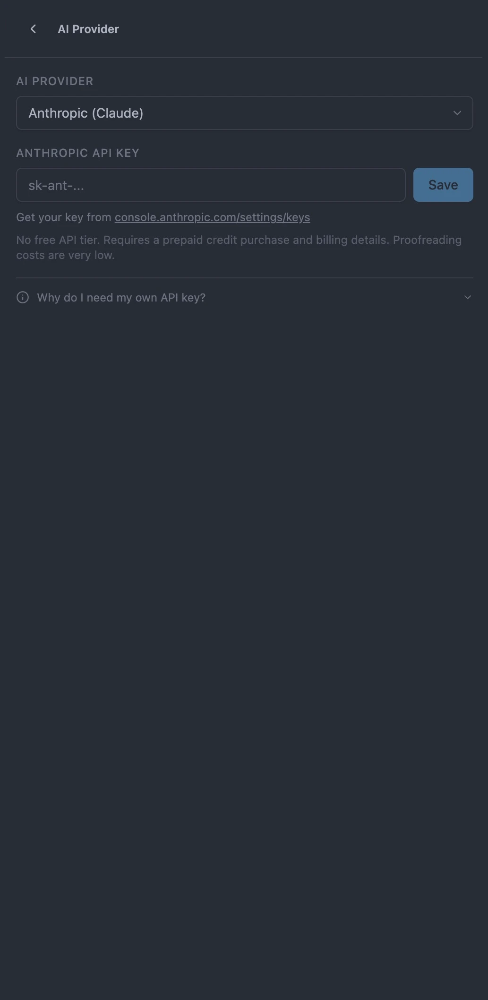

Screenshot 2 · AI Provider Selection · 1290×810 → crop to 1280×800

AI Providers
Your AI,
your key.
your key.
Connect directly to the AI you already use. No subscription, no shared servers — just your API key, your text, and nothing in between.

Google GeminiFree tier available

OpenAIGPT-4o & GPT-4o-mini

ClaudePrecise, nuanced rewrites

xAI GrokCapable & growing